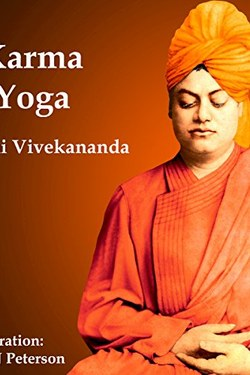

Library › Self-Improvement
Karma Yoga — Summary & Key Lessons

The yoga of work: how to act at full power without being crushed by results — Vivekananda's lectures on karma.
📖 OPEN THE FULL INTERACTIVE BREAKDOWN →🌐 Read it in Hindi, Hinglish, Gujarati, Tamil & 22 more languages — free, with audio.
💡 The Big Idea
Karma yoga is the discipline of doing. Vivekananda's radical claim: work done with attachment binds you to anxiety, while work done as offering frees you to act with total energy. He warns against two false ideals — the lazy renunciate and the anxious achiever. The true worker is calm in the storm, generous in victory, and indifferent to praise, because the work itself is the offering.
🧠 The 6 Key Lessons
Lesson 1: Work Is Worship — Literally
Lecture 1: The Philosophy of Work
Vivekananda refuses the split between the spiritual and the practical: to the karmi, work done well is prayer. The biggest deception in life is selfishness dressed as duty — the person who works only for reward, even for 'the family', is still in the cage. Freedom begins when work is done because it is right, not because it pays.
📖 Example: Two surgeons, equal skill: one operates for the fee and the applause, one for the patient. The second is free; the first is a slave in a white coat. Read the full example →
⚡ Do this: Choose one recurring task and do it this week as an offering — full attention, no reward-seeking.
Lesson 2: Attachment Is the Real Prison
Lecture 2: Attachment
The core mechanism: attachment to results converts any activity into anxiety. Worse, every person attached to a possession or an outcome is, in Vivekananda's phrase, chained to the object of their desire. The cure is not softness — unattached action is the hardest discipline because it requires you to act with everything while owning nothing.
📖 Example: An entrepreneur who treats the business as an extension of his ego cannot make good decisions; the one who serves it treats it well. Read the full example →
⚡ Do this: Identify one outcome you are gripping too hard and add the sentence: 'I will do the work and release the result.'
Lesson 3: The Trap of the False Renunciate
Lecture 3: Renunciation
Vivekananda attacks the person who escapes into spirituality to avoid work: renunciation of action without renunciation of attachment is empty. The kitchen, the office, the family — those are the training ground. The man who 'renounces' the world while burning with ambition is merely hiding; the man who works in the world with a free mind has renounced everything.
📖 Example: A 'spiritual' retreat of a month does more good than a year of escape when it returns you to your real duties — or less. Read the full example →
⚡ Do this: Before you add any practice to your life, ask: does this improve my work and service, or help me avoid them?
Lesson 4: Give Without Needing Thanks
Lecture 4: Charity
The highest form of karma is service without expectation. Vivekananda extends it to motives: even the desire to be seen as generous is ego. Give where the gift cannot return — not as investment in reputation. The modern translation: help without maintaining a ledger of favours owed.
📖 Example: The mentor who advises a junior with no expectation becomes the person everyone silently trusts. Read the full example →
⚡ Do this: Do one act of help this week with no record, no credit, no one to tell.
Lesson 5: Calm Energy Is the Mastery
Lecture 5: Freedom
The result of karma yoga is practical and visible: energy without anxiety. The unattached worker is calm under pressure, quick to recover, generous in victory. Their power is not less than the attached worker's — it is more, because none of it is wasted on worry. Vivekananda's summary is the whole book: be like the ocean, receiving rivers without rising.
📖 Example: The calmest person in a crisis is usually the most powerful — and usually the least attached to the outcome. Read the full example →
⚡ Do this: Track one week: how much of your energy goes to the work, and how much to worry about its results?
Lesson 6: The Motive Test: Working Without Desire
Chapter 2: The Secret of Work
Vivekananda's test for every action is its motive: work done with desire for reward binds the worker, even when the reward is noble. The free person works because work is their nature — like the sun shining or the river flowing — not because of what it buys. Even the desire to help can become a chain; drop the receipt and the work becomes light.
📖 Example: The volunteer who burns out is usually the one keeping score of gratitude; the one who gives without expectation keeps giving for decades. Read the full example →
⚡ Do this: Do three acts of help this week with the receipt torn up — no credit, no mention, no memory of the debt.
✅ 5-Step Action Plan
- Do one recurring task as full offering, no reward-seeking.
- Release one gripped outcome: work, then let go.
- Check each 'practice': does it serve work, or avoid it?
- Give once with no credit, no record, no telling.
- Audit energy: % on work vs. % on worry — then shift the ratio.
⚠️ When This Doesn't Work
Vivekananda's lectures are shaped by 19th-century Hindu revivalism and can sound anti-materialistic; the goal is not passivity but mastery. Modern work culture needs boundaries and rest that the lectures don't address.
💀 The Graveyard Proves It
📷 V.G. Siddhartha — The Coffee King Who Carried It Alone. Burn: A founder India mourned Read the full case study →
💬 Best Quotes from Karma Yoga
- “Do work that is worthy — and do not care for the result.”
- “It is the worker who is the real worshipper.”
- “The world is a gymnasium where we strengthen our muscles by fighting with it.”
Interactive version: mark lessons as read, listen in your language, share quote cards.